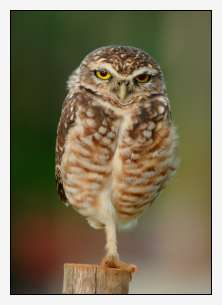

Orientation scales the color components of each pixel so that its color, taken as a position vector in RGB space, has unit length. That is, the colors are normalized to unit vectors.
In this state, the RGB components of the pixel plot a point on a unit sphere centered on the origin of the space, establishing a chromatic orientation of the pixel's color independent of its luminosity. It is an apt form for a number of color selection and identification algorithms.
The format of the command is:
-orientation
-orientation takes no parameters.
The red, green and blue components of a particular color may be regarded as coordinates in a three dimensional RGB color space, thereby endowing color with a spatial sense (see -mix_rgb) and permitting us to regard colors as vectors.
The RGB color space takes the familar Euclidean metric, that is, we may assign length to a color vector by taking the square root of the sum of squared color components. Normalizing a color vector entails scaling each color components by the length of the vector, yeilding a triplet of unitless numbers that describe the orientation of the color on a unit sphere centered upon the origin. The -orientation command applies this to the pixels of an image, giving rise to a data set suited for various operations on colors.
We can emphasize particularly colored items by rendering only the luminance of pixels with any other hue. The particularly designated hue is a key color and remains unchanged in the altered image, giving striking emphasis to anything originally having the key color. We might also like to achieve some subtlety by rendering closely related hues in a desaturated way. -orientation gives the means of identifying pixels with a particular hue.
In the following, -orientation converts all the pixels of a subject image into unit vector form. We then take the dot product of the converted image and the key color — also in unit vector form. This gives us a grayscale image where the white pixels correspond to those in the original subject image that are exactly the key color. Grays correspond to colors more-or-less aligned with the key color. How do we achieve this?
Recall that the dot product of two unit vectors return the cosine of the angle of separation. hues differing only in luminosity with the key color are parallel to one another in RGB space and have an angle of separation of zero degrees, a cosine of one. These render as white. Hues transverse to the key color are separated by ninety degrees, a cosine of zero and are rendered black. All other hues render in shades of gray reflecting their alignment with the key color. We might call this a 'key color map.'
Our way is now very easy. We convert our original subject image into Hue-Saturation-Luminosity space and replace the saturation channel with our key color map. Kick it back into RGB space and we're home in time for coffee.
We might like an additional knob to turn. We'd like to control the rate of desaturation as colors misalign. Perhaps only a little bit of misalignment is sufficient call to make the map entry black. On the other hand, perhaps we'd like to be accepting of various amounts of misalignment, so that colors not especially aligned would be desaturated only to a degree.
Paticulars follow.
|  | gmic burrowingowl.png... |
...--orientation... |
|
...100%,100%,100%,100% -fill_color[-1] 0.7538,0.655,0.0527... |
|
...-mul[-2,-1]... |
|
...-compose_channels[-1] add -normalize[-1] -80,0... |
|
...-exp[-1] -reverse[-1,-2] -rgb2hsl[-1] -split c... |
|
...-reverse[-4,-2] -remove[0] -append c... |
|
-hsl2rgb |
gmic burrowingowl.png --orientation 100%,100%,100%,100% -fill_color[-1] 0.7537708878517151,0.6550235748291016,0.05266521498560905 -mul[-2,-1] -compose_channels[-1] add -normalize[-1] -80,0 -exp[-1] -reverse[-1,-2] -rgb2hsl[-1] -split c -reverse[-4,-2] -remove[0] -append c -hsl2rgb
Compute the pointwise orientation of vector-valued pixels in selected images. Example(s): image.jpg --orientation --norm[-2] -negative[-1] -mul[-2] [-1] -reverse[-2,\ -1]
From G'MIC Handbook Version 1.5.8.1 Updated: December 31, 2013 04:51 PM UTC